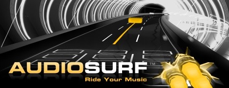

Friday, February 29 2008

Since its release two weeks ago,
Audiosurf has taken the world by storm. Hats off to Dylan Fitterer, the game’s creator, for making a fun, addictive game that has all of us digging through our music collections for new music and old favorites to "ride." The critics are raving as well:
GamesRadar claims Audiosurf offers "a near-religious musical gaming experience,"
1UP calls it "the best possible excuse to rediscover your CD/MP3 collection," and
Bit-tech.net states "Audiosurf is not just another music game – it’s the logical extension of all music games, wrapped up and tailored especially for the best of all platforms, the PC."
The Half-Life 2 mod
Pirates, Vikings, and Knights II received lots of praise when it unleashed its polished, fast-paced multiplayer game modes. The team just released its beta 2.0 release, which features an improved melee combat system, new maps, and new classes to play—including the peg-legged Pirate Captain, who’s parrot doubles as one of most unique support classes we’ve seen in some time.
Gametrailers TV with Geoff Keighley visited Valve to get an exclusive look at Left4Dead and upcoming Team Fortress 2 updates. The episode premieres on Spike TV on Friday night and will be streamable on Gametrailers.com this weekend. Check out the sneak peek
here.
© Valve Corporation. All rights reserved. Valve, Half-Life, Counter-Strike, Team Fortress and Source are trademarks and/or registered trademarks of Valve Corporation.